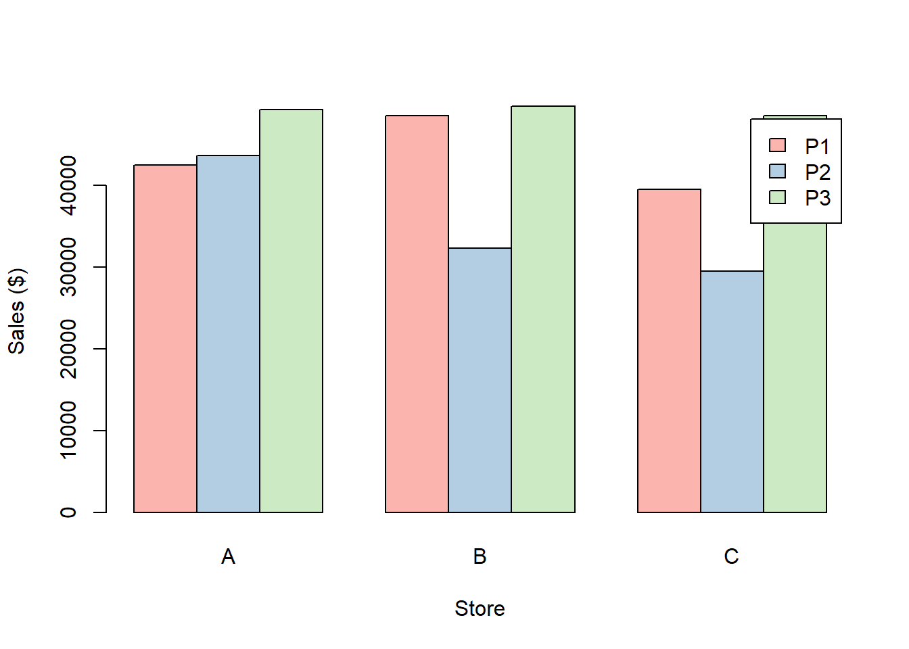
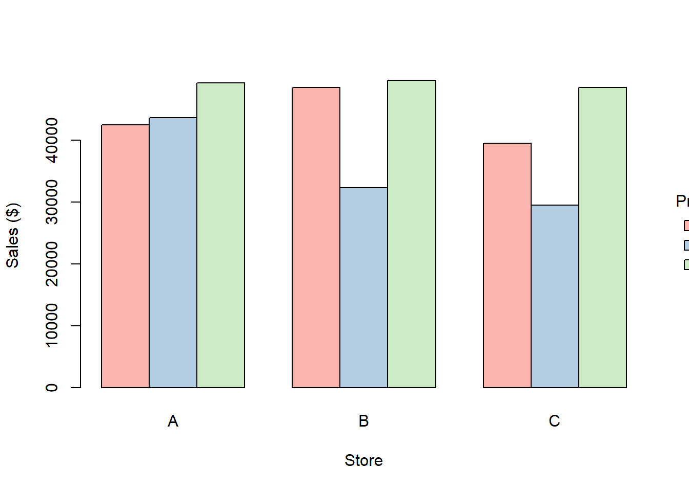
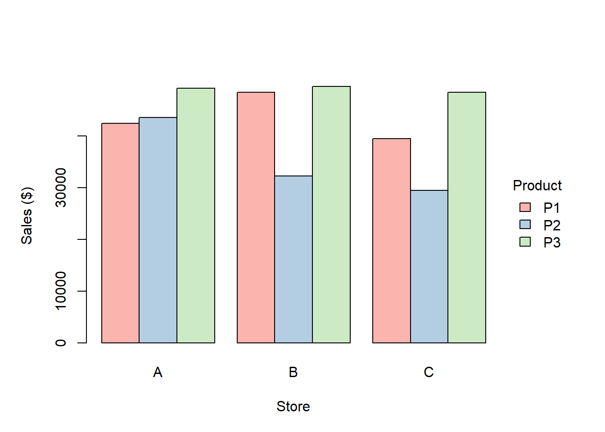
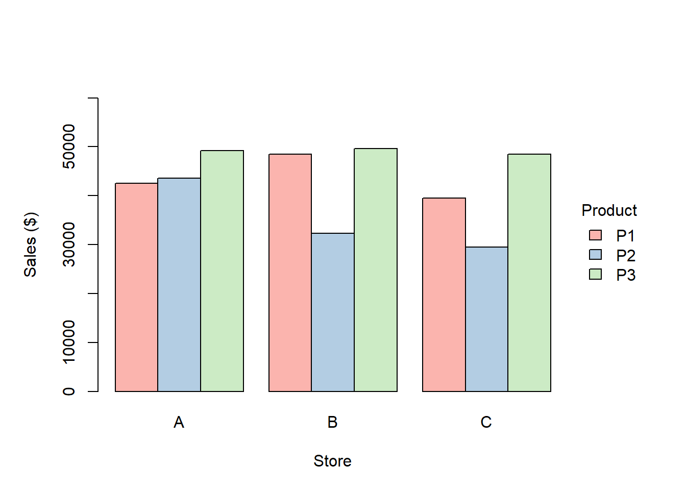

Creating clustered bar graphs with R base graphics
Data Visualization
R
A tutorial on creating clustered bar graphs using base R.
Published
April 18, 2025
A clustered bar graph is useful for comparing values across two categories of data. In this type of graph, we organize the bars in groups based on the levels of the first categorical variable. The height of each bar within a group represents the value of a level of the second categorical variable.
You can create this graph in R using the pre-installed base graphics package. This package has many plotting functions that are easy to use and excel at generating basic plots quickly. Use the command library(help = “graphics”) to get more information on this package, including a complete list of its functions.
Pre-requisities
To follow through with the activities in this article, you should have a working knowledge of R.
The Data
Store
Product
Sales ($)
A
P1
42,500
B
P1
48,502
C
P1
39,500
A
P2
43,600
B
P2
32,303
C
P2
29,500
A
P3
49,270
B
P3
49,664
C
P3
48,507
Table 1: Dummy sales data.
To create the graphs in this article, we use the dataset displayed in Table 1. In this dataset, Store and Product are categorical variables, while Sales is a numerical variable. You can use a clustered bar graph to compare the monthly sales of the three products across the three stores. The bars in this graph will be organized into three groups based on store levels, with each bar representing the sales figure for a specific product.
How to create the graph
Step 1: Reorganize the dataset
We use the barplot() function in the base graphics package to plot the clustered bar graph. However, we must reorganize the dataset into a wide format to use this function effectively. In this format, each unique product occupies a single row, and each cell corresponds to a sales figure. Currently, the dataset has a long format, with store and product values spread across multiple rows.
The barplot() function requires the dataset to be in vector or matrix form. In this exercise, we input the data as a matrix using the matrix() function.
A B C
P1 42500 48502 39500
P2 43600 32303 29500
P3 49270 49664 48507
The matrix() function has two crucial arguments, nrow and byrow. nrow specifies the number of rows in the matrix, while byrow, set to TRUE, indicates that the matrix is populated row by row.
Step 2: Create the graph
The code provided below uses the barplot() function to create the graph shown in Figure 1.
Figure 1: Clustered bar graph created using barplot().
As demonstrated in the code, barplot() accepts several arguments. Use the command ?barplot to obtain a complete list of the function’s arguments.
The argument beside must be set to TRUE to ensure the bars within groups appear side-by-side, creating the desired clustered bar graph. If set to FALSE, the bars will appear stacked on each other. Additionally, we use the xlab and ylab arguments to specify the labels for the graph’s x-axis and y-axis, respectively.
By setting the argument legendtext to TRUE, we create a legend for the graph. A legend is a crucial element of a clustered bar graph because it helps users associate bar colors with distinct data points.
Step 3: Customize the graph
The graph in Figure 1 is a basic clustered bar graph with few elements. We can enhance the graph’s clarity by adding colors, customizing the legend, adjusting the margins, and rescaling the y-axis.
1. Add colors
We use the Pastel1 palette from the RColorBrewer package to color the bars of the graph based on product levels.
If you don’t already have this package installed, do so with the command install.packages("RColorBrewer").
Once loaded, you can access the brewer.pal() function and use it to create a vector of colors for your graph. This function takes two arguments: the number of colors and the name of the color palette. For a complete list of the palettes in Rcolorbrewer, use the command display.brewer.all().
We use the following code to add colors and create the graph shown in Figure 2.
library(RColorBrewer)barplot(mydata, beside =TRUE, col =brewer.pal(3, name ="Pastel1"), xlab ="Store", ylab ="Sales ($)", legend.text =TRUE)

Figure 2: Clustered bar graph with added product colors.
2. Customize the legend
We can enhance the legend of the graph in Figure 2 by
Repositioning it to avoid blocking the bars.
Removing the box around it.
Adding a title.
For these adjustments, we pass the following arguments to args.legend() as a list:
title = “Product”: sets the title of the legend.
x = “right”: positions the legend to the right of the graph.
bty = “n”: suppresses the box around the legend, reducing clutter.
inset = c(-0.16): shifts the legend 0.16 units to the right.
The adjustments result in the graph shown in Figure 3.
barplot(mydata, beside =TRUE, col =brewer.pal(3, name ="Pastel1"), xlab ="Store", ylab ="Sales ($)", legend.text =TRUE, args.legend =list(title ="Product", x ="right", bty ="n", inset =-0.16))

Figure 3: Clustered bar graph with customized legend.
3. Adjust the margins
Figure 3 shows that the right margin lacks sufficient space for the legend. To resolve this problem, we increase the size of the right margin using the par() function with the mai argument, specifying the margin in inches. Use the command par("mai") to check the plot’s default margin settings.
Additionally, we can use the space argument to reduce the space between the groups of bars, thus creating more room in the right margin. This argument accepts two values. The first value indicates the space between bars within a group, while the second value denotes the space between groups of bars. These changes result in the graph in Figure 4.
par(mai=c(1, 1, 1, 1.2))barplot(mydata, beside =TRUE, col =brewer.pal(3, name ="Pastel1"), space =c(0, 0.6), xlab ="Store", ylab ="Sales ($)", legend.text =TRUE, args.legend =list(title ="Product", x ="right", bty ="n", inset =-0.16))

Figure 4: Clustered bar graph with adjusted margins.
4. Rescale the y-axis
We use the ylim argument to specify the range of the y-axis. This argument accepts a vector containing the smallest and largest values on the y-axis. Here is the code used to create the graph shown in Figure 5.
par(mai=c(1, 1, 1, 1.2))barplot(mydata, beside =TRUE, col =brewer.pal(3, name ="Pastel1"), space =c(0, 0.6), xlab ="Store", ylab ="Sales ($)", ylim =c(0, 60000), legend.text =TRUE, args.legend =list(title ="Product", x ="right", bty ="n", inset =-0.16))

Figure 5: Clustered bar graph with various modifications.
Conclusion
This article has shown that you can create a visually appealing and effective clustered bar graph using the barplot() function from R’s base graphics package. The function has several arguments that allow you to customize the graph’s appearance to meet your needs. While graphing, remember that simplicity and clarity are crucial to effectively communicating your data to viewers.